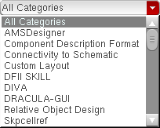
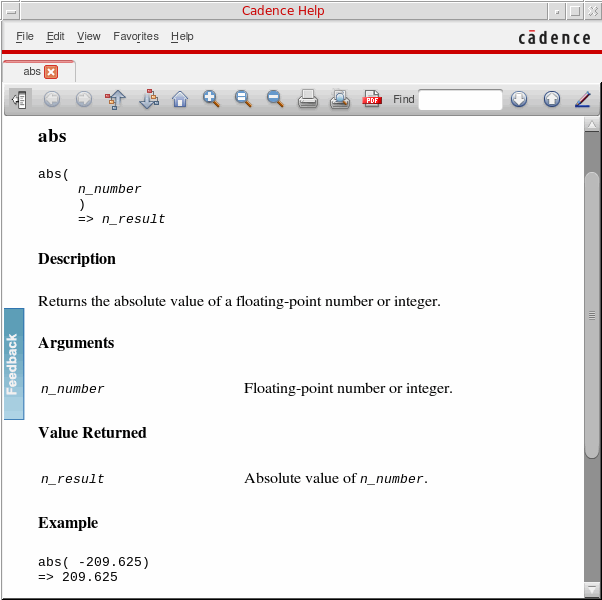
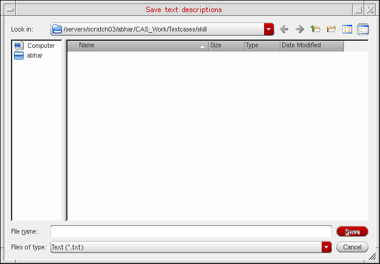

D
Using SKILL API Finder
The SKILL API Finder displays abstracts and syntax statements for language functions and APIs. It reads the language information that each product loads from your
You can add
To start the SKILL API Finder from the CIW, choose Tools – SKILL API Finder. The Cadence SKILL API Finder window appears.
To start the SKILL API Finder from a UNIX command line, type the following:
cdsFinder
See also Starting the Finder in Test Mode.
The following sections provide more information:
- Searching
- Viewing Syntax and Description of Matches Found
- Saving Descriptions in a Text File
- Cadence Data
- Customer Data
- Environment Variable for Specifying Additional Finder Data Directories
- Data Format
- Troubleshooting
- Starting the Finder in Test Mode
Searching
You can perform the following types of searches:
To start a search, do the following:
Categories
By default, the SKILL API Finder searches all categories in the
-
Select the required category from the Search in cyclic field and click Go.
The set of categories that appears in your Search in cyclic field depends on the products installed on your system.The SKILL API Finder confines all searches for functions in the selected category.
To see all items in the selected category, type .* in the Find What field and click Go.
Simple Strings
You can search for simple strings in the selected set of Finder data. Matches appear in the Results area.
If you type a search string and do not mark any of the search string qualifier check boxes (Match case, Match beginning, or Match end), all items containing that string—without regard to casing—appear in the Results area:
If you mark the Match end check box, only those matches where your search string occurs at the end of an item appear in the Results area:
$ at the end of your search string. For example:string$
If you select the Match beginning check box, only those functions or APIs where your search string occurs at the beginning appear in the Results area (as illustrated in the image below).
^ at the beginning of your search string. For example:^string
You can further restrict your search by selecting the Match case check box.
Combinations
You can use .* in your search string to create combinations, such as “any item containing some letter or string followed by some other letter or string with any number of other letters in between.” You can combine the use of .* with the search string qualifier check boxes to refine your search.
Here is an example that uses the Match beginning and Match case check boxes in combination with .* to find all items containing a lowercase letter e followed by all-lowercase string with zero or more of any other letters in between, where string must occur at the end of the item:
Here is an example using the Match beginning check box in combination with .* to find all items starting with the letter e (or E) followed by case-insensitive string:
Searching Multiple Strings
If you specify multiple search strings in the Find What field, all functions or APIs that have the searched strings, irrespective of the order, will appear in the Results area. The search results will ignore the Match beginning and Match end check boxes even if they are selected as the string qualifiers.
Here is an example of using multiple search strings to search the APIs that have the words db, save, and trigger in any order:
Viewing Syntax and Description of Matches Found
The SKILL functions and APIs that match the search string are populated in the Results area. Scroll bars appear as necessary. When you highlight a particular match by clicking it, the related syntax and text description appears in the Description area.
Viewing Detailed Descriptions of SKILL APIs
In addition to viewing the syntax and text descriptions that appear in the Description area, you can also view the complete API documentation including the arguments, return values, and examples. To do so, perform the following steps:
-
Select a match in the Results area and click More Info. The complete documentation of the selected API appears in a new Cadence Help window.

If you click the More Info button again, the documentation of the selected API appears in a new tab in the same Cadence Help window.
Saving Descriptions in a Text File
You can save the syntax and description of one or more matches in a text file. To do so, perform the following steps:
-
Select the check box corresponding to the required function displayed in the Results area and click Save. The Save text descriptions dialog box appears.
 -
In the File Name field, specify a new or existing filename.By default, the file gets saved in the current work directory. If you want to save the file in some other directory, you can choose the directory using the Look in drop-down list box. Alternatively, you can use the two directory icons, one for accessing the Parent Directory and another for creating a New Folder.
-
Click Save.
If the specified file exists, the SKILL API Finder appends the Description of the selected function(s) to the end of that file. If the file does not exist, the SKILL API Finder creates it.
Cadence Data
You can find Cadence-supplied information here:
your_install_dir/doc/finder/language/functionArea/*.fnd
.fnd as the file extension, such as chap1.fnd. All files must contain information in the appropriate data format.|
is a descriptive subdirectory name for the product information, such as |
Customer Data
You can add your own internal functions to the database by copying your information to the directory where
For example, if you add your functions to
your_install_dir/local/finder/SKILL/Your_APIs/your.fnd
the following string appears in the Searching cyclic field:
Your APIs Only
See the following topics for more information about customer data:
Environment Variable for Specifying Additional Finder Data Directories
You can use the CDS_FINDER_PATH environment variable to specify additional directories for Finder database files. After the Finder loads data from
your_install_dir/doc/finder/language/functionArea/*.fnd
it then loads data from a colon-separated list of one or more directories you specify using this environment variable. The path or paths you specify can be a combination of absolute and relative paths.
setenv CDS_FINDER_PATH .:/home/myFinder/db:../../projectFinderFiles
The program will look for your Finder database files (*.fnd) two directory levels below the paths you specify (corresponding to language/functionArea/*.fnd). Cadence strongly recommends that the additional directories for Finder database files follow the naming conventions outlined for
setenv CDS_FINDER_PATH /home/myFinder/db
the Finder database files must be located in a directory path such as
/home/myFinder/db/SKILL/myFunctionArea/
Data Format
The Finder requires the following three-string format for each unique entry in the *.fnd files:
("functionName"
"syntaxString"
"AbstractText.")
("abs"
"abs(n_number) =>n_result"
"Returns the absolute value of a floating-point number or integer.")
If you have more than one function that performs the same task, you can put them together as follows:
("functionName1,functionName2, …"
"syntaxString1"
"syntaxString2"
…
"AbstractText.")
("sh, shell"
"sh( [t_command] ) => t/nil
shell( [t_command] ) => t/nil"
"Starts the UNIX Bourne shell sh as a child process to execute a command string.")
Troubleshooting
Too Many Matches
More than 500 matches have been found. Please use a more restrictive search string.
Change the search string to limit the number of matches.
Save File Is Not Writable
filename is not a writable file. Please enter a new file name.
This message appears if any aspect of specifying the file name results in an error. Click OK. The error message disappears leaving the
No files found
Look in the Cadence database directory to see if any files were loaded at installation:
your_install_dir/doc/finder/language/functionArea/*.fnd
See also “Starting the Finder in Test Mode” for more information.
Descriptions List Area Full
WARNING: The display has reached its maximum capacity. Please save (if desired) and clear the window.
If the number of characters in the Descriptions list area exceeds one megabyte, the current expansion operation aborts and this message appears. You can clear the list area by clicking Clear with or without saving your information first.
Starting the Finder in Test Mode
When you run in test mode, the Finder writes a report file called /tmp/finder.tst as well as writing to standard output. The Finder reports directories it finds in the database and the number of entries found in each file.
To start the Finder in test mode, run the cdsFinder command with the -t option as follows:
cdsFinder -t
To check for duplicate instances of each name in a particular directory's data files, add the directory name as follows:
cdsFinder -t checkDir
The checkDir you specify should include the language and functionArea subdirectories. For example:
cdsFinder -t doc/finder/SKILL/SKILL_Language
Return to top